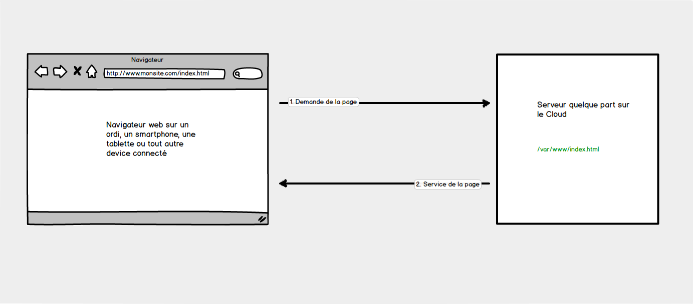
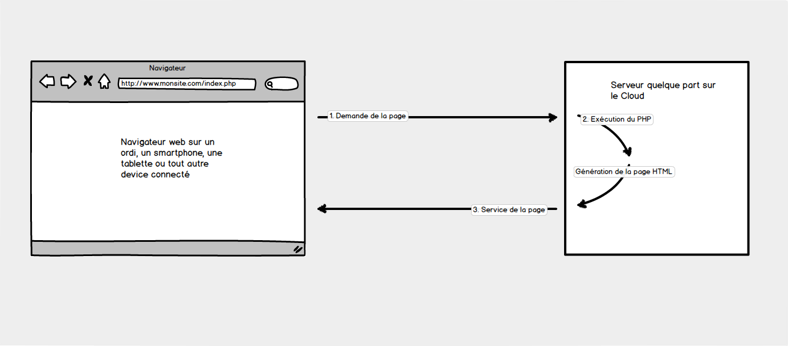
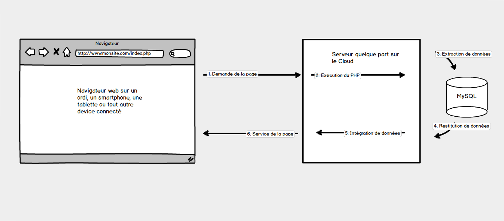
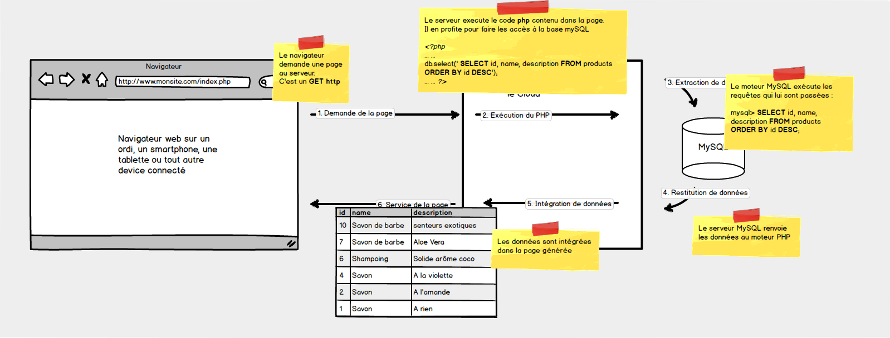

Cours Programmation Web


Pierre-Gilles Levallois
Twitter : @Pilooz
LinkedIn : https://www.linkedin.com/in/pglevallois/
- 1996 : Data Engineer : SQL Infocentre
- 1997 : Dba Oracle
- 1998 : Lead Dev sur Laclasse.com 15 ans
- 2017 : Coordonateur Technique de l'UrbanLab
- 2019 : Développeur Indépendant
Organisation du module
- 6 séances de 3h de cours + TP
- 4 séances Projet Web
Introduction
2 types de sites
- Statiques : Pages réalisées uniquement en HTML et css
- Dynamiques : Utilisation d'un langage intermédiaire pour générer les pages HTML/CSS.
Mais ? Pourquoi faire ?
- Afficher des pages dont les contenus changent
- Personnaliser le contenu en fonction du profil de l'utilisateur
- Récupérer et traiter des données envoyées dans un formulaire
Fonctionnement du web statique
Fonctionnement du web dynamique
Fonctionnement du web dynamique
Fonctionnement du web dynamique
PHP ?
-
Inventé en 1994 par un Groëlandais : Rasmus Lerdorf

- Distrubué en Open Source dès 1995
- Langage de programmation Web exécuté côté serveur
- <?php ... ?>
MySQL ?
-
Inventé en 1995, par David Axmark, Michael Widenius, et Allan Larsson
- Moteur de base de données
- Stockage et structuration des données
- Langage d'interrogation : SQL
- Administration avec phpMyAdmin